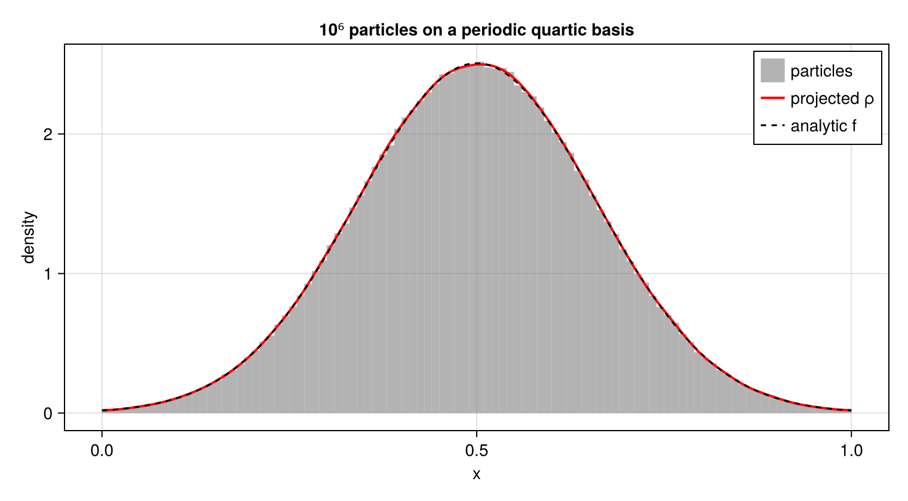

Projecting between representations of the distribution function
A distribution function is stored here in one of three forms. This page describes projections and sampling operations between them.
- A
ParticleDistributionis the Klimontovich measure $f_p(v) = \sum_\alpha w_\alpha \delta(v - v_\alpha)$. The particle integrators evolve this representation, and its moments are weighted sums over particles. - A
SplineDistributionholds the coefficients of $f_s(v) = \sum_I \hat{f}_I \varphi_I(v)$. It is what the collision operators differentiate, and it gives a continuous $f_s$ where a particle measure has none. - A
GridDistributionholds the values $f_{ij}$ at the nodes of an $n_x \times n_v$ phase-space grid. It is what the reduced tensors contract.
This page is the map of the directions between them. Every implemented direction is shown here as an executed example, so a call that drifts from the API fails this page's own build; every direction that no method implements is named as absent. A page that is silent about a direction reads as if that direction existed, which is worse than a page that says it does not.
Projecting a state between representations is what this page is about. Projecting out the kernel of a Poisson operator is a different question, it belongs to PoissonSolvers, and it is answered there.
Which directions exist
| from → to | status | call |
|---|---|---|
particles → potential rhs | implemented | projection!(potential, dist) |
particles → spline | implemented, VD == 1 and VD > 1 | projection(velocities, dist, final_dist) |
function → spline | implemented | project_function(f, sdist) |
spline → moments | implemented, as sums over particles Σ_α π(v_α) f_s(v_α), not integrals; "energy" is projection_second_moment | projection_density, projection_momentum, projection_second_moment |
spline → particles | a stub that raises an error | projection!(sdist, pdist) |
particles → grid, grid → particles | absent: no method takes both types | — |
spline → grid, grid → spline | absent; a spline has no x-dependence, so these directions need a spatial factor or spatial reduction | — |
function → grid | by sampling, grid.values .= g.(grid.x) .* h.(grid.v') | — |
grid → moments | implemented, rectangle rule | velocity_moments(grid) |
Particles → potential rhs
This is the step a Vlasov–Poisson step makes at every stage value: the particle weights are deposited onto the basis of the potential's right-hand side. Each particle contributes to the local_width(basis) basis functions that do not vanish at its position, and an argument on a periodic axis is reduced into the domain before evaluation, so the unwrapped position the state keeps needs no handling at the call site.
projection! is not exported, so the block brings it into scope explicitly.
The rest of the block is the worked example of test/projections/projections.jl: the same npart, the same seed, the same sampler and the same tolerance, so that the figure below and the numerical assertion there are about one and the same sample.
using CairoMakie
using PoissonSolvers
using Random
using SimpleSplines
using VlasovMethods
using VlasovMethods: projection!
CairoMakie.activate!(type = "png")
npart = 1000000
ncells = 32
order = 5
domain = (0.0, 1.0)
pbasis = PeriodicBasisSpline(domain, order, ncells)
potential = Potential(pbasis)
# The sample is drawn from the global RNG, so without this the tolerance below is asserted
# against a different sample on every run.
Random.seed!(1234)
μ = 0.0
σ = 2.0
f = x -> exp(-0.5 * (4π * x - μ - 2π)^2 / σ^2) * sqrt(π * σ^2) / sqrt(2)
# Substituting 4πx - 2π = 2π(2x - 1) turns `f` into √(2π)·exp(-2π²(x - ½)²), the normal
# density with mean 1/2 and standard deviation 1/(2π). Rejecting draws outside the domain
# samples that normal conditioned on the domain. Its density differs from `f` by the
# normalisation for the excluded tails; the comparison below includes that truncation error.
xmean = 0.5
xstd = 1 / 2π
samples = Vector{Float64}(undef, npart)
for i in eachindex(samples)
x = xmean + xstd * randn()
while !(domain[begin] < x < domain[end])
x = xmean + xstd * randn()
end
samples[i] = x
end
dist = ParticleDistribution(1, 1, npart)
dist.particles.x .= samples'
dist.particles.w .= (ones(npart) ./ npart)'
projection!(potential, dist)
# The deposit is the load vector ∫ρφᵢ. Solving the mass-matrix system gives the density's
# spline coefficients, rather than the load vector plotted as though it were a density.
quadrature = SplineQuadrature(pbasis)
ρ = Spline(pbasis, mass_factorization(quadrature) \ PoissonSolvers.rhs(potential))
x = range(domain[begin], domain[end]; length = 501)
# The assertion is taken on the test's own grid, where its tolerance belongs.
xa = domain[begin]:0.1:domain[end]
# Match the test's Euclidean norm and absolute tolerance on its grid. The error includes
# sampling, truncation and spline approximation; no tolerance is widened for this page.
err = sqrt(sum(abs2, f.(xa) .- ρ.(xa)))
err ≤ 2.5e-2 || error("the projected density is off by ", err)
fig = Figure(size = (760, 420))
ax = Axis(fig[1, 1]; xlabel = "x", ylabel = "density",
title = "10⁶ particles on a periodic quartic basis")
hist!(ax, samples; bins = 100, weights = fill(1 / npart, npart),
normalization = :pdf, color = (:gray, 0.6), label = "particles")
lines!(ax, x, ρ.(x); color = :red, linewidth = 2, label = "projected ρ")
lines!(ax, x, f.(x); color = :black, linestyle = :dash, label = "analytic f")
axislegend(ax)
# Three curves and three plots: a figure that silently loses one of them is the failure this
# assertion exists for.
length(ax.scene.plots) == 3 || error("expected three plots, got ", length(ax.scene.plots))
fig
The histogram shows the sampled, truncated density. The spline $\rho$ reconstructs the deposited particles, and $f$ is the untruncated normal density. The assertion uses the same Euclidean norm and tolerance as test/projections/projections.jl.
Particles → spline
The projection of the Klimontovich measure onto a spline basis is the $L^2$ projection, i.e. the coefficients $\hat{f}_I = \sum_K \mathbb{M}^{-1}_{IK} \sum_{\alpha : v_\alpha \in \mathrm{supp}\, \varphi_K} w_\alpha \varphi_K(v_\alpha)$. Pairing a delta with a basis function is an evaluation, so the load vector is the same deposition as above, and the mass matrix is what differs between the two directions. There is one method for a one-dimensional velocity space and one for a VD-dimensional one; nothing else differs between them.
velocities is passed separately from the distribution because the implicit solvers evaluate the right-hand side at a stage value rather than at the particles' stored positions.
using Random
using SimpleSplines
using VlasovMethods
# A seed of its own, so that the printed numbers below are the same on every build: the
# deposition example keeps the seed of the test it ports.
Random.seed!(0xC0FFEE)
npart = 1000
velocities = randn(npart)
pdist = ParticleDistribution(1, 1, npart)
pdist.particles.v[1, :] .= velocities
pdist.particles.w[1, :] .= 1 / npart
sdist = SplineDistribution(1, 1, 21, 4, (-10.0, 10.0), 0, Free())
projection(velocities, pdist, sdist)Spline(BSplineBasis, (23,))A particle that has left the velocity domain is an error rather than a warning: its weight would be dropped from $f_s$ while it kept moving, and $f_s$ would then be zero at its position, which makes the $f_s'/f_s$ of every collision operator a division by zero. Enlarge the domain, or give the mesh oversized end cells with length_big_cell.
Function → spline
A prescribed function takes the same two steps against the quadrature the basis already carries. project_function integrates $f$ against $\varphi_I$ on the Gauß–Legendre nodes, project_Maxwellian is the one call for the case that most examples need, and both work in any number of velocity dimensions.
h(v) = exp(-v^2 / 2) / sqrt(2π)
fsdist = SplineDistribution(1, 1, 21, 4, (-10.0, 10.0), 0, Free())
project_function(h, fsdist)Spline(BSplineBasis, (23,))f is called with a scalar for a one-dimensional velocity space and with a VD-tuple otherwise, and SVector accepts both, so project_Maxwellian is one method for every dimension.
Spline → moments
These helper functions compute sums over the particles, $\sum_\alpha \pi(v_\alpha) f_s(v_\alpha)$, not integrals $\int \pi(v) f_s(v) \, dv$. The spline is sampled only at the supplied velocities. The isDerivative keyword puts $f_s'$ in place of $f_s$, and no particle weight enters either. The collision operators do not call these helpers; the conservative Lenard–Bernstein coefficients use weighted particle moments instead.
The third of them is the second moment $v^2$ and is called projection_second_moment, not an energy: an energy would carry the factor $\tfrac{1}{2}$, and in a phase-space model it also carries the $x$-dependence that the grid's velocity_moments is written to keep.
(density = VlasovMethods.projection_density(sdist, velocities),
momentum = VlasovMethods.projection_momentum(sdist, velocities),
second_moment = VlasovMethods.projection_second_moment(sdist, velocities))(density = 282.49524798511897, momentum = 2.1330431767319555, second_moment = 132.19829122635235)Here sdist is the spline of the particles projected two sections above, and velocities is that same sample, so the three numbers are the sampled moments of the projected distribution.
Spline → particles
This direction is not implemented. There is a method for it and it raises rather than converting:
function projection!(init_dist::SplineDistribution, final_dist::ParticleDistribution)
error("projecting a spline distribution back onto particles is not implemented")
endTwo meanings are available for it, and neither is chosen yet:
- Draw a new particle sample from $f_s$ — the reverse of the projection above, and the direction a reduced model would lift a reduced state back onto particles with.
- Keep the particle positions and set the weights $w_\alpha \propto f_s(v_\alpha)$ — the cheap one, and the one whose result is not a sample of $f_s$ but a quadrature of it at the positions that happen to be there.
Each needs a rule for what to do where $f_s < 0$, which a projection of an undersampled particle measure produces readily and which K8 of KNOWN_ISSUES.md records as open. Choosing between the two is a modelling decision rather than an implementation detail, so this page names the direction as absent and KNOWN_ISSUES.md records it.
Particles ↔ grid, and spline ↔ grid
These directions are absent. A GridDistribution exists and is a DistributionFunction beside the other two, but no method takes a ParticleDistribution and a GridDistribution together, or a SplineDistribution and a GridDistribution together.
A SplineDistribution represents a function of $v$ only. Mapping a general phase-space grid to one therefore needs a choice of spatial slice or spatial average, which these interfaces do not provide. In the other direction, a spatial factor $g(x)$ can supply the missing dependence through the separable product $g(x) \cdot f_s(v)$.
Function → grid
A function of $x$ and $v$ becomes a grid by being sampled at the nodes, which is the one conversion here that needs no projection at all:
g(x) = 1 + 0.3 * cos(x)
grid = GridDistribution(8, 161, (0.0, 2π), (-6.0, 6.0))
grid.values .= g.(grid.x) .* h.(grid.v')
gridGridDistribution{Float64}((8, 161))The two axes are not symmetric, and the sampling above has to respect that: $x$ is periodic and its right end is the node the left end already is, so it is not stored, while $v$ is bounded and both of its ends are nodes.
Grid → moments
velocity_moments integrates the grid over $v$ by the rectangle rule, $\int f(x_i, v) \, dv \approx \sum_j f_{ij} h_v$, at each $x$-node:
velocity_moments(grid)(density = [1.2999999979829786, 1.2121320324752756, 0.9999999984484447, 0.7878679644216148, 0.6999999989139108, 0.7878679644216148, 0.9999999984484447, 1.2121320324752756], momentum = [-6.523685011967101e-17, -3.4184596630729374e-17, 6.056098878203994e-17, 1.8557802419301157e-17, -2.3925243824488827e-18, 1.8557802419301157e-17, 6.056098878203994e-17, -3.4184596630729374e-17], energy = [0.6499999612354588, 0.6060659810335651, 0.49999997018112224, 0.39393395932867925, 0.34999997912678543, 0.39393395932867925, 0.49999997018112224, 0.6060659810335651])The rule is the integral of the bilinear interpolant plus $\tfrac{h_v}{2}(f_{i1} + f_{i n_v})$, so it is exact up to the two end values and first order in $h_v$ where those do not vanish. The moment functions above are its opposite number on the spline: those are sums over particles, and this is an integral over a grid.